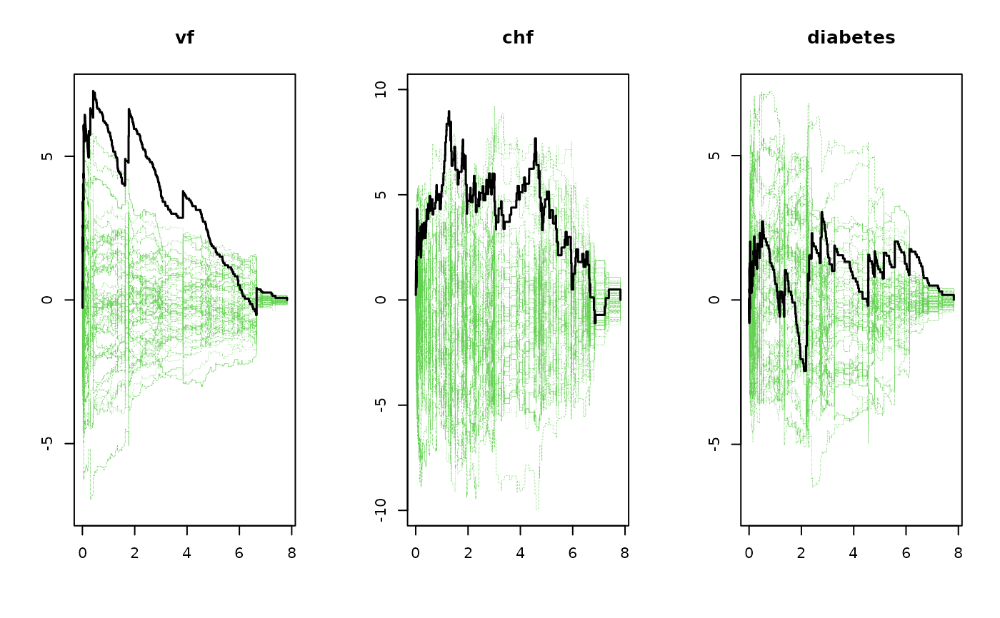

Cumulative score process residuals for Cox PH regression p-values based on Lin, Wei, Ying resampling.
# S3 method for phreg gof(object, n.sim = 1000, silent = 1, robust = NULL, ...)
| object | is phreg object |
|---|---|
| n.sim | number of simulations for score processes |
| silent | to show timing estimate will be produced for longer jobs |
| robust | to control wether robust dM_i(t) or dN_i are used for simulations |
| ... | Additional arguments to lower level funtions |
Thomas Scheike and Klaus K. Holst
library(mets) data(sTRACE) m1 <- phreg(Surv(time,status==9)~vf+chf+diabetes,data=sTRACE) gg <- gof(m1) gg#> Cumulative score process test for Proportionality: #> Sup|U(t)| pval #> vf 7.276731 0.010 #> chf 8.971263 0.079 #> diabetes 3.044404 0.788m1 <- phreg(Surv(time,status==9)~strata(vf)+chf+diabetes,data=sTRACE) ## to get Martingale ~ dN based simulations gg <- gof(m1) gg#> Cumulative score process test for Proportionality: #> Sup|U(t)| pval #> chf 8.036132 0.153 #> diabetes 3.441389 0.667## to get Martingale robust simulations, specify cluster in call sTRACE$id <- 1:500 m1 <- phreg(Surv(time,status==9)~vf+chf+diabetes+cluster(id),data=sTRACE) gg <- gof(m1) gg#> Cumulative score process test for Proportionality: #> Sup|U(t)| pval #> vf 7.276731 0.001 #> chf 8.971263 0.066 #> diabetes 3.044404 0.796#> Cumulative score process test for Proportionality: #> Sup|U(t)| pval #> chf 8.036132 0.155 #> diabetes 3.441389 0.649